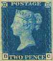

L'Organisation des Webmasters
Philatéliques
Statuts
- L'Organisation des Webmasters Philatéliques
(PWO) a été créée pour promouvoir et
développer l'activité de Webmastering
philatélique.
- Ses membres sont des collectionneurs de timbres qui contribuent activement
au développement sur le Web de la collection de timbres en créant des
sites philatéliques attrayants.
- L'PWO facilite les relations et les
échanges d'expérience entre ses membres en encourageant des contacts
directs, en organisant des groupes d'études en et hors ligne, des forums,
des compétitions, des expositions en commun et autres activités.
- Pour devenir membre, le candidat s'inscrit en ligne et est alors
automatiquement inclus dans la base de données des membres. Le président
décide ultérieurement si le candidat devient membre ou si sa candidature
est rejetée. Les raisons du rejet doivent être présentées par écrit au
candidat. Le candidat peut appeler de cette décision auprès du Conseil
exécutif. Les décisions de ce dernier sont définitives.
- Il est attendu des membres de l'PWO
qu'ils observent strictement les présents statuts, ainsi que les règles de
la Nétiquette. Tous les membres ont droit à la protection de leur vie
privée et ne doivent pas recevoir de spam ni être contactés trop souvent
sans leur accord préalable. Le président, assisté du Conseil exécutif, a
le droit d'exclure tout membre qui violerait les règles des présents
statuts.
- L'adhésion à l'PWO est à vie et est gratuite au présent.
- Pour se retirer de l'PWO, il suffit de
le notifier par e-mail au président. Aucune raison ne doit être fournie,
mais une explication est bienvenue. Les données des membres qui ont
annoncé leur décision de se retirer de l'PWO seront ôtées de la base de
données et ne figureront plus sur la liste des membres.
- Le contenu de la base de données est publié sur le Net. Sont indiqués
le nom du site, son type (Page personnelle, commercial, administration
postale, organisme philatélique), l'adresse du site, le nom de l'auteur,
son pays de résidence et l'adresse e-mail du webmestre.
- L'PWO est dirigée par un président
et par des administrateurs qui composent le Conseil exécutif.
- Les membres du Conseil exécutif se co-optent entre eux, soit via une
procédure interne, soit à la demande d'un membre de l'PWO. Il est attendu
du candidat qu'il/elle présente un dossier sommaire sur son activité sur
le Net, l'adresse de son site Web, les récompenses philatéliques sur le
Web et les références. Le candidat est informé par e-mail de la décision
du Conseil.
- Les membres du Conseil exécutif ne
doivent pas seulement être des pionniers de l'activité philatélique sur
le Net, mais ils doivent aussi encourager les autres collectionneurs à la
publication sur le Web, avoir déjà publié plusieurs pages de leur
création et accepter d'investir du temps dans l'activité et le
développement de l'PWO.
- La liste des membres du Conseil est publiée sur le Net.
- Un des buts importants de l'PWO est
d'élaborer la réglementation des compétitions de sites Web, de préparer
des jurés compétents et d'organiser ses propres compétitions, mondiales,
régionales, thématiques ou autres.
- La liste des jurés agréés et leur domaine d'expertise est publiée sur
le Net.
- L'activité de l'PWO est assurée par
des donations, des droits qui peuvent être demandés pour la participation
à différentes activités, comme des compétitions ou des forums spéciaux
et grâce à l'espace ouvert sur son site pour la publicité d'organisations
commerciales philatéliques.
- Les membres de l'PWO sont informés des activités du club par des
articles publiés sur son site et/ou par e-mail ainsi que par des
informations sur les mises à jour du site. Si nécessaire, une lettre
périodique pourrait être publiée et distribuée par e-mail.
- Le président, assisté du Conseil, est
responsable des relations avec les autres organisations philatéliques
telles que FIP, UPU, AIJP et autres. Il peut établir des relations
spéciales entre l'PWO et les autres organisations philatéliques comme des
adhésions, des affiliations ou toutes formes de coopération.
- Les langues officielles de l'PWO utilisées dans les communications avec
le président et le secrétariat sont l'anglais, le français ou l'allemand.
- La version anglaise des statuts de l'PWO est celle qui fait foi.
- Si nécessaire, les présents statuts peuvent être modifiés ou adaptés
par le président assisté du Conseil, de façon à assurer une nécessaire
flexibilité dans le fonctionnement de l'PWO. Les membres de l'PWO seront
informés des changements sur le site ou par e-mail.
|
- Buts
de l'PWO
- Liste des membres
de l'PWO
- Cliquez ici
pour nous rejoindre
- Cliquez ici
pour nous envoyer un e-mail
|
 |
Créé le 3 février 2001.
Mis à jour le 27.11.05
.
Traduction française par Pierre Courtiade
Copyright © 2001 par PWO & par Victor Manta, Suisse
Tous droits réservés mondialement.